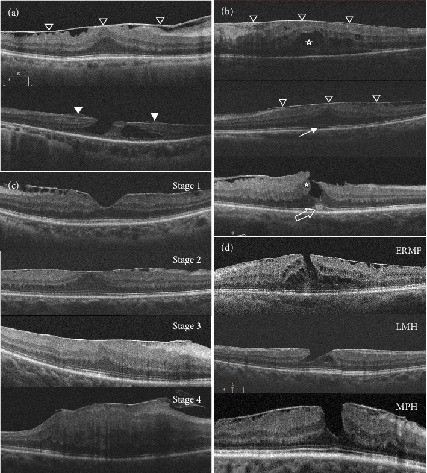
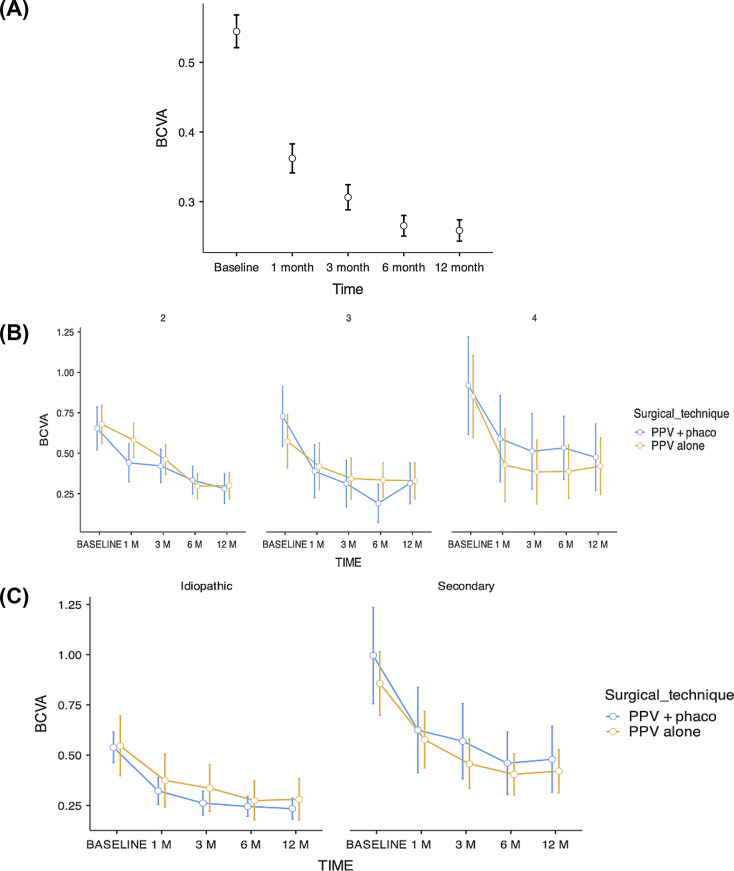
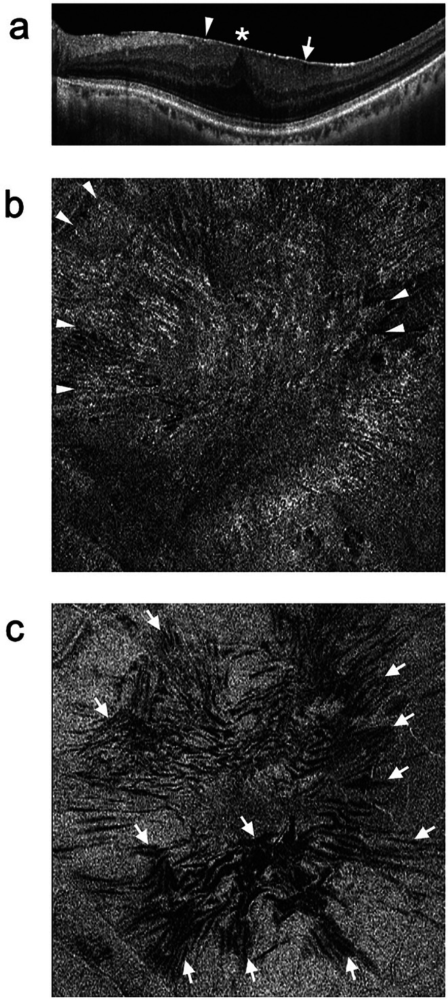

1467 — Màng trước võng mạc (ERM): đọc OCT theo 4 giai đoạn Govetto và quyết định bóc màng
Tags: pattern:mang-truoc-vong-mac pattern:co-keo-vong-mac pattern:mat-mot-ben pattern:day-vong-mac vung:hoang-diem vung:vong-mac vung:mat score:Govetto protocol:OCT protocol:OCT-en-face protocol:PPV protocol:ILM-peeling protocol:M-CHARTS score:M-CHARTS
Mức chắc chắn (certainty): tổng hợp y văn (literature synthesis) — số liệu chính từ đoàn hệ 340 mắt bóc màng 12 tháng (PMC13234982), phân loại Govetto gốc 194 mắt (PMID 27993592), đoàn hệ 635 mắt đối chiếu ERM vô căn – thứ phát (PMC12077978), nghiên cứu 46 mắt diễn tiến tự nhiên (PMC12404372) và bài tổng quan OCT – phẫu thuật (PMC11607056). Chỗ suy luận được đánh dấu [suy luận].
Vì sao phải có bài riêng: 1455 trả lời "vì sao mắt đã cắt dịch kính vẫn còn dịch" nhưng quy cho thuốc; còn màng trước võng mạc (epiretinal membrane, ERM) là nguyên nhân cơ học — màng co kéo không đáp ứng anti-VEGF, và bóc màng mới là điều trị. Đọc sai ERM thành "phù hoàng điểm kháng thuốc" dẫn tới tiêm lặp vô ích nhiều tháng trong khi thị lực mất dần do tế bào hạch và tế bào quang thụ bị kéo giãn.
1. Tổng quan bệnh học – cơ chế hình ảnh
- Bệnh học (pathology): ERM là màng xơ – tế bào không có mạch nằm trên màng giới hạn trong (internal limiting membrane, ILM). Tế bào chính: tế bào thần kinh đệm võng mạc (Müller), hyalocyte, tế bào biểu mô sắc tố (RPE), nguyên bào sợi cơ (myofibroblast) (PMC11607056). Hai giả thuyết sinh bệnh: (1) PVD gây rách ILM → tế bào Müller di chuyển lên bề mặt; (2) vỏ dịch kính tồn dư (vitreoschisis) → hyalocyte được cytokine (bFGF, NGF) kích thích → biệt hóa thành myofibroblast (PMC11607056).
- TẠI SAO trên OCT màng là một ĐƯỜNG TĂNG PHẢN XẠ (hyperreflective line): màng là collagen đặc + tế bào + sợi cơ, chiết suất cao hơn dịch kính và võng mạc bình thường nên tán xạ ngược mạnh; vì màng mỏng (hàng chục µm) nên chỉ hiện thành một dải sáng sát bề mặt, khác với dịch dưới võng mạc (vùng giảm phản xạ, không có dải sáng) hay mảng xơ dưới võng mạc (dải sáng nằm dưới biểu mô sắc tố) (PMC11607056, Hình 1).
- TẠI SAO có nếp võng mạc (retinal folds): myofibroblast co rút tạo lực kéo tiếp tuyến (tangential traction) → võng mạc gấp nếp. Trên OCT en face cắt 30 µm dưới ILM, nếp hiện thành đường giảm phản xạ dạng tuyến — đây là dấu khách quan của co kéo, thấy được cả khi B-scan chưa rõ (PMC11607056, Hình 1).
- TẠI SAO nhìn méo (metamorphopsia) mà thị lực còn tốt: 3 cơ chế — (1) bất thường tế bào quang thụ do kéo giãn, (2) tổn thương lớp nhân trong (inner nuclear layer, INL) chứa tế bào Müller/horizontal/bipolar, (3) tế bào Müller bị di lệch dẫn ánh sáng sang tế bào quang thụ "sai địa chỉ" (PMC11607056). Vì vậy thị lực là thước đo tồi để quyết định mổ: méo xuất hiện trước khi thị lực giảm, và không bị nhiễu bởi đục thể thủy tinh như thị lực.
- TẠI SAO có "lớp trong lạc chỗ (ectopic inner foveal layers, EIFL)": khi mất lõm hoàng điểm, các lớp trong trượt vào và bắc cầu qua hõm → tạo dải tăng/giảm phản xạ liên tục vắt ngang hõm, dày 50–250 µm ở trung tâm; EIFL là dấu của giai đoạn muộn, gắn với thị lực kém hơn (PMC13234982).
- Phân loại OCT Govetto (194 mắt, 172 bệnh nhân) — ngưỡng để phân giai đoạn (PMID 27993592): GĐ 1 = 22,1% (màng mỏng, còn lõm hoàng điểm); GĐ 2 = 45,4% (mất lõm + dày lớp nhân ngoài); GĐ 3 = 26,3% (EIFL liên tục vắt qua hõm); GĐ 4 = 6,2% (màng dày + EIFL + các lớp võng mạc bị phá vỡ). EIFL gặp ở 32,5%; thị lực giảm dần từ GĐ 1 → 4 (P < 0,001).
- Dịch tễ: ERM gặp 4–11,8% dân số, tăng theo tuổi (PMC11607056); tổng hợp khác ghi 6–11% và tới 15% ở người > 70 tuổi (PMC13234982).
- Độ dày hoàng điểm tăng theo giai đoạn — dùng làm ngưỡng đọc: trong 340 mắt, CMT trung bình 457,5 ± 81,4 µm (trung vị 449,5), và trung vị theo giai đoạn là 423 µm (G2) → 482 µm (G3) → 514 µm (G4), tương quan rho = 0,346 với giai đoạn (PMC13234982). CMT đo ở ô 1 mm trung tâm theo lưới ETDRS.
- Kết cục sau mổ (340 mắt, 12 tháng): thị lực 0,54 ± 0,44 logMAR (≈ 20/70) → 0,26 logMAR (≈ 20/36), trung vị giảm 0,23 logMAR ≈ 11–12 chữ ETDRS. Theo giai đoạn: G2 0,519 → 0,256 (Δ −0,263); G3 0,553 → 0,268 (Δ −0,285); G4 0,933 → 0,345 (Δ −0,588) — giai đoạn càng muộn, mức lời càng lớn nhưng trần thị lực cuối càng thấp (PMC13234982).
2. Mẫu hình + chẩn đoán phân biệt theo cơ chế và hình thái (gamut)
- Theo cơ chế: (a) vô căn (idiopathic) — 82,9% trong đoàn hệ 340 mắt; (b) thứ phát — 17,1%: sau bong võng mạc (retinal detachment, RD), sau phẫu thuật đục thể thủy tinh, võng mạc đái tháo đường (DR), tắc nhánh/tĩnh mạch trung tâm (RVO), viêm màng bồ đào (uveitis), chấn thương (PMC13234982).
- Theo hình thái trên OCT — 5 kiểu cần phân biệt trước khi mổ:
- ERM "cellophane"/sớm: màng mỏng, còn lõm hoàng điểm, ít co kéo → theo dõi.
- Macular pucker: màng dày, nếp rõ, mất lõm, CMT tăng → chỉ định bóc khi méo/thị lực ảnh hưởng.
- Lỗ hoàng điểm giả (macular pseudohole, MPH): bờ hõm dốc đứng, không có khuyết toàn chiều, gần như không có dịch nội võng mạc, CMT gần bình thường (tiêu chuẩn Hubschman: tiêu chí tùy chọn là microcyst trong INL + CMT trung tâm gần bình thường) (PMC11607056).
- ERM foveoschisis: tách lớp trong hõm do kéo — phải phân biệt với lỗ hoàng điểm thật vì thị lực có thể còn tốt.
- Lỗ hoàng điểm lớp (lamellar macular hole, LMH) kèm tăng sinh trước võng mạc (LHEP): bờ hõm lởm chởm, bị bào mòn (undermined edges), màng xám dai bám chặt bờ hõm — không phải ERM điển hình; bóc LHEP ở đáy hõm mỏng có thể gây lỗ hoàng điểm toàn chiều (PMC11607056).
- Theo vị trí — ngưỡng ảnh hưởng chức năng: nếp võng mạc ngoài vùng trung tâm bán kính 1,5 mm (đường kính 3 mm) không làm giảm thị lực/không gây méo (PMC11607056) → đừng chỉ định mổ vì "OCT có nếp" ở ngoại vi.
- Gợi nhớ 3 câu hỏi trước mọi ERM: (1) còn lõm hoàng điểm không? (2) có EIFL/DRIL không? (3) lớp ngoài (đường ellipsoid, EZ) còn nguyên không? — ba câu này chính là GĐ 1→4 và là yếu tố tiên lượng.
3. Bảng so sánh phân biệt (ma trận đối chiếu)
| Thực thể (entity) | Hình ảnh điển hình (OCT / en face) | Chốt vào (rule-in) | Chốt loại (rule-out) | Gợi ý xác nhận |
|---|---|---|---|---|
| ERM vô căn | Dải tăng phản xạ mỏng sát ILM toàn hoàng điểm, nếp tỏa nan hoa, CMT tăng, EIFL ở GĐ 3–4 | Dải sáng trên bề mặt + nếp en face 30 µm dưới ILM | Không có dải sáng mặt trên → nghĩ phù/dịch | SD-OCT 2 trục + en face; đo CMT ô 1 mm ETDRS |
| ERM thứ phát sau bong võng mạc | Màng dày, xơ hơn, thường GĐ 4 (65%); kèm tổn thương EZ, dấu laser/cryo cũ | Tiền sử mổ RD + màng xuất hiện 1–3 tháng sau (91% ca) | Màng mỏng, không can thiệp RD trước đó → vô căn | Soi bờ võng mạc ngoại vi, OCT theo dõi 1–3 tháng |
| Lỗ hoàng điểm giả (MPH) | Bờ hõm dốc đứng, không khuyết toàn chiều, CMT gần bình thường, có thể microcyst INL | Không có khuyết võng mạc toàn chiều trên mọi lát cắt | Có khuyết toàn chiều + viền dịch dưới võng mạc → lỗ thật | Cắt OCT ngang và dọc, cắt mỏng qua tâm |
| LMH + LHEP | Bờ hõm bào mòn, màng xám dai bám bờ, mất lớp trong tại hõm | Bờ undermined + vật liệu tăng phản xạ dính bờ hõm | Màng mỏng trải đều mặt trên → ERM | Đánh giá độ dày đáy hõm trước khi bóc |
| ERM foveoschisis | Tách lớp trong dạng khoang tại hõm, kéo từ màng mặt trên | Khoang tách lớp trong + màng co kéo | Dịch dưới võng mạc đơn thuần → không phải schisis | OCT cắt mỏng, đối chiếu thị lực |
| Màng dưới võng mạc do CNV (AMD) | Vật liệu dưới RPE/võng mạc, kèm dịch dưới võng mạc, xuất huyết | Tổn thương dưới RPE + dịch dưới võng mạc + FA/ICGA | Dải sáng trên bề mặt → ERM | FA/ICGA, OCT-A |

Hình: (a) ERM điển hình (tam giác đen) và tăng sinh trước võng mạc (tam giác trắng); (b) khuyết đường nối IS/OS, dịch nội võng mạc (sao), dấu "cotton ball" (mũi tên rỗng); (c) phân loại Govetto GĐ 1–4; (d) ERM foveoschisis, LMH, lỗ hoàng điểm giả. Nguồn: J Ophthalmol 2025, PMC12077978, Fig. 1, CC BY 4.0.Dấu hiệu quyết định trên từng giai đoạn
- GĐ 1–2: lõm hoàng điểm còn/mất là mốc; màng mỏng, chưa EIFL → theo dõi 6–12 tháng nếu triệu chứng nhẹ.
- GĐ 3: EIFL liên tục vắt qua hõm — bắt đầu có mất tương ứng võng mạc; méo thường rõ, là lúc cân nhắc mổ.
- GĐ 4: EIFL + phá vỡ lớp (DRIL, tổn thương EZ) — thị lực nền kém nhất nhưng mức lời sau mổ lớn nhất.
4. Protocol chụp + hệ phân giai đoạn và ngưỡng xử trí
- OCT hoàng điểm (SD-OCT): B-scan qua tâm theo 2 trục ngang + dọc, cắt mỏng; en face cắt 30 µm dưới ILM để thấy nếp; đo CMT ô 1 mm trung tâm ETDRS và ghi mm/µm. Đây là bộ tối thiểu để phân giai đoạn (PMC11607056; PMC13234982).
- Định lượng triệu chứng: M-CHARTS (19 đường chấm, khoảng chấm 0,2–2,0 độ thị giác); điểm ≥ 0,5 là mức ảnh hưởng sinh hoạt. Ngưỡng thời điểm mổ được đề xuất: M-CHARTS trước mổ > 0,5 và sau mổ < 0,5, tương ứng độ sâu nếp võng mạc quanh hoàng điểm (MDRF) 69–118 µm (PMC11607056).
- Phẫu thuật: PPV 23G/25G + bóc ERM ± bóc ILM, nhuộm Brilliant Blue G để kiểm soát diện bóc, bơm khí (air/SF₆) khi cần (PMC11607056; PMC12905464). Trong đoàn hệ 340 mắt, 75,3% mổ phối hợp phaco + IOL (PPV+PHACO) (PMC13234982).
- Bóc ILM: lợi và giá — tái phát ERM 2,0% khi bóc ERM + ILM vs 11,0% khi chỉ bóc ERM; đổi lại có DONFL (dissociated optic nerve fibre layer) và tranh cãi về thị lực (PMC11607056).
- Nguy cơ nhiễm trùng: sau mổ ERM, viêm nội nhãn 52/14.545 (0,36%) so với 20/14.545 (0,14%) sau mổ lỗ hoàng điểm — RR 2,60 (95% CI 1,55–4,35) (PMC13675174).
- ERM sau bong võng mạc — thời điểm bóc: 91% (50/55) màng được chẩn đoán trong 1–3 tháng sau mổ RD; bóc < 6 tháng cho thị lực cuối 0,31 logMAR so với 0,63 khi bóc ≥ 6 tháng (P = 0,005); phân bố giai đoạn GĐ 4 65%, GĐ 3 24%, GĐ 2 11% (PMC12081393).
flowchart TD
A[OCT có dải tăng phản xạ trên bề mặt võng mạc] --> B{Còn lõm hoàng điểm?}
B -->|Còn, màng mỏng| C[Giai đoạn 1 - theo dõi 6-12 tháng]
B -->|Mất lõm, chưa có EIFL| D[Giai đoạn 2 - theo dõi, cân nhắc khi méo tăng]
B -->|Mất lõm + EIFL liên tục| E[Giai đoạn 3 - chỉ định bóc khi M-CHARTS > 0,5]
B -->|EIFL + phá vỡ lớp hoặc EZ| F[Giai đoạn 4 - mổ sớm, tiên lượng cuối kém hơn]
C --> G[Kiểm tra ngoại vi tìm lỗ võng mạc]
D --> G
E --> G
F --> G
- Khung quyết định thực hành: theo dõi khi GĐ 1–2 + M-CHARTS < 0,5 + thị lực tốt; mổ** khi **M-CHARTS > 0,5, hoặc MDRF 69–118 µm, hoặc thị lực giảm do màng (không do đục thể thủy tinh); mổ sớm ở ERM sau RD (bóc < 6 tháng) (PMC11607056; PMC12081393).

Hình: đường cong thị lực (logMAR) sau PPV bóc ERM — (A) toàn bộ 12 tháng, (B) theo giai đoạn Govetto và kỹ thuật, (C) theo căn nguyên và kỹ thuật. Nguồn: Int J Retina Vitreous 2026, PMC13234982, Fig. 2, CC BY 4.0.5. Biến thể bình thường và cạm bẫy
- Cạm bẫy #1 — "ERM vô căn" thực ra là thứ phát do lỗ võng mạc ngoại vi: trong 635 mắt được mổ với chẩn đoán ban đầu là ERM vô căn, 115 mắt (18,1%) có lỗ võng mạc ngoại vi và được đổi chẩn đoán thành ERM thứ phát. Trên OCT, hai nhóm gần như không khác nhau (CMT, khuyết IS/OS, dịch nội võng mạc, cotton ball, phân giai đoạn) — chỉ có mất cân xứng độ dày cạnh hoàng điểm trái–phải là khác (PMC12077978). → Bắt buộc soi đáy mắt ngoại vi/ảnh góc rộng trước khi gọi là vô căn.
- Cạm bẫy #2 — màng "teo nhỏ" không phải là đang tốt lên: ở 46 mắt ERM thị lực tốt (≥ 20/25) theo dõi ≥ 2 năm, nhóm mất ≥ 2 dòng thị lực có diện tích màng giảm 34,2% so với 11,7% ở nhóm ổn định (P < 0,001); giảm diện tích màng 7,66% tại 6 tháng dự báo mất thị lực với Se 81,8%, Sp 82,6% (PMC12404372). → Đừng đọc "màng nhỏ lại" là lui bệnh.
- Cạm bẫy #3 — lỗ hoàng điểm giả vs lỗ thật: chỉ một lát cắt qua tâm không đủ; khuyết toàn chiều chỉ được chẩn đoán khi thấy trên cả trục ngang và dọc, kèm viền dịch dưới võng mạc ở lỗ thật.
- Cạm bẫy #4 — LHEP không phải ERM: bóc "màng" dính bờ hõm ở LMH có đáy rất mỏng có thể tạo lỗ hoàng điểm toàn chiều; kỹ thuật đúng là gài (embedding) LHEP vào bờ hõm (PMC11607056).
- Cạm bẫy #5 — DONFL sau bóc ILM: các "hố" giảm phản xạ xếp dọc sợi thần kinh không phải tái phát và thường không ảnh hưởng thị lực; đừng mổ lại.
- Cạm bẫy #6 — quy thị lực giảm cho màng khi có đục thể thủy tinh: thị lực bị nhiễu bởi cataract; dùng M-CHARTS và OCT để quyết định; ở người sắp mổ, phaco + PPV thường được chọn.
- Cạm bẫy #7 — "giai đoạn 4 thì không mổ": GĐ 4 có thị lực nền kém nhất (0,933 logMAR) nhưng mức lời tuyệt đối lớn nhất (Δ −0,588); tiên lượng cuối kém hơn, không phải không có lợi (PMC13234982).
- Biến thể bình thường: phản xạ ánh sáng (cellophane reflex) ở mắt trẻ không kèm dày võng mạc/nếp trên en face thường không phải ERM thực thụ; và đường viền ILM đôi khi tạo dải mảnh tự nhiên — phân biệt bằng nếp en face + CMT.
6. Tự lượng giá — Blind Quiz
Ca 1 — Nam 68 tuổi, nhìn đường kẻ bị cong 6 tháng, thị lực 20/40, không đục thể thủy tinh đáng kể.

- Câu hỏi: Dấu hiệu chính nằm ở lớp nào? Có mấy dấu hiệu của co kéo? Giai đoạn Govetto và nên làm gì tiếp?
Bấm để hiện đáp án
- Dấu hiệu: dải tăng phản xạ mỏng nằm TRÊN bề mặt võng mạc (mũi tên), kèm nếp võng mạc thấy rõ trên en face cắt 30 µm dưới ILM (đường giảm phản xạ dạng tuyến); CMT tăng, lõm hoàng điểm bị kéo.
- Chẩn đoán: ERM có co kéo (macular pucker). Vì màng là mô xơ–tế bào mỏng nên chỉ tạo một dải sáng, khác dịch dưới võng mạc (vùng tối).
- Xử trí: đo M-CHARTS; nếu > 0,5 và chưa có EIFL → bóc màng ± ILM (cân nhắc phối hợp phaco). Nếu M-CHARTS < 0,5 → theo dõi 6 tháng.
- Nguồn: Jpn J Ophthalmol 2024, PMC11607056, Fig. 1, CC BY 4.0.
Ca 2 — Nữ 60 tuổi, 3 tháng sau mổ bong võng mạc, nhìn mờ tăng dần. OCT: màng dày, mất lõm, EIFL, đường ellipsoid bị phá vỡ.
- Câu hỏi: Đây là giai đoạn nào? Có nên chờ thêm không? Vì sao?
Bấm để hiện đáp án
- Giai đoạn 4 (màng dày + EIFL + phá vỡ lớp/EZ) — tương ứng hình (c) "Stage 4".
- Không nên chờ: ERM sau bong võng mạc thường xuất hiện 1–3 tháng sau mổ (91%) và bóc < 6 tháng cho thị lực cuối 0,31 logMAR so với 0,63 khi bóc muộn (P = 0,005); GĐ 4 chiếm 65% trong nhóm ERM sau RD.
- Lưu ý tiên lượng: GĐ 4 có mức lời lớn nhất (Δ −0,588 logMAR) nhưng trần thị lực cuối thấp nhất.
- Nguồn: PMC12077978 Fig. 1 (CC BY 4.0); số liệu PMC12081393; PMC13234982.
Ca 3 — Nam 55 tuổi, OCT thấy "lỗ" ở hoàng điểm, bờ dốc đứng, không có dịch dưới võng mạc, CMT 250 µm.
- Câu hỏi: Đây là lỗ hoàng điểm thật hay giả? Cần thêm gì để chốt? Có chỉ định mổ ngay không?
Bấm để hiện đáp án
- Lỗ hoàng điểm giả (macular pseudohole) — hình (d) nhóm "MPH": bờ dốc đứng, không khuyết toàn chiều, CMT gần bình thường, không có viền dịch dưới võng mạc.
- Cần: cắt OCT mỏng qua tâm cả trục ngang và dọc, tìm microcyst INL (tiêu chí tùy chọn Hubschman); kiểm tra EZ còn nguyên không.
- Chưa mổ ngay: theo dõi nếu thị lực tốt; mổ khi M-CHARTS > 0,5 hoặc CMT/nếp tiến triển. Nếu là lỗ thật (khuyết toàn chiều + dịch) thì xử trí khác hoàn toàn.
- Nguồn: PMC12077978 Fig. 1, CC BY 4.0; tiêu chuẩn MPH: PMC11607056.
Bài liên quan chéo
- 1455 – Vì sao mắt đã cắt dịch kính còn dịch (đáp ứng anti-VEGF)
- 1865 – Bong võng mạc tái phát sau tháo dầu
- 1410 – Lấy dầu silicone và dầu tồn lưu
- 1465 – Tăng nhãn áp sau tiêm nội nhãn
- 1464 – Toxocariasis nội nhãn ở người lớn (u hạt co kéo gây ERM)
Không dùng để chẩn đoán độc lập khi chưa có người hướng dẫn.